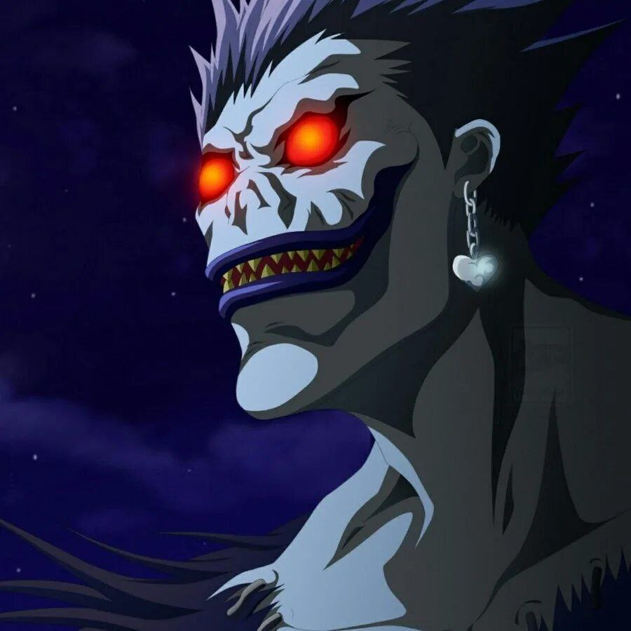

Рюк
"Вот и пробил твой час, Лайт. Я же тебе говорил в самом начале нашего знакомства, что наступит день, когда я запишу твое имя в свою тетрадь...Должен тебе признаться, я довольно неплохо провел время в твоей компании, а иногда мне даже было весело."
Рюк ( リューク , Ръюк) — шинигами, который косвенно отдал тетрадь смерти Лайту Ягами после того, как ему наскучило царство Шинигами. В попытке развлечь себя, он крадет вторую тетрадь и бросает её в человеческий мир, чтобы кто-нибудь её нашёл. Эту тетрадь нашёл Лайт, который воспользовался ей в попытке избавить мир от зла и несправедливости, удовлетворяя потребность Рюка в развлечениях.